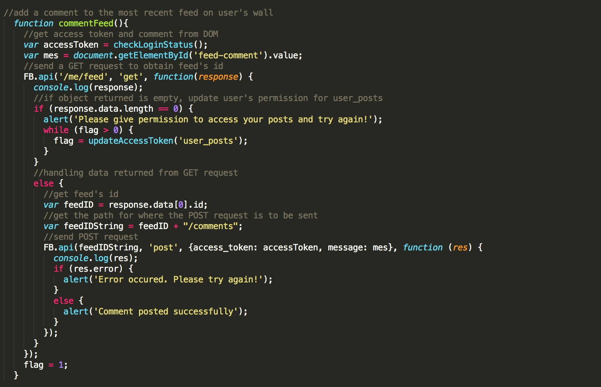

Graph API
Graph API is the primary ways for developers to write and read data on Facebook on behalf of their users. Graph API sends HTTP requests to http://graph.facebook.com accomplish many tasks. For example, developers can use the POST method to post the some content on their user's wall. In addition, Graph API can use the GET method to get information like feeds, albums and comments of their current user. In order to use this API, developers need to have an access token from their current user, and this can be easily obtained by having users login to our apps.
Access token is generated when a user logged into Facebook from a source outside of Facebook. This token is what provides developers a temporary and secure access to Facebook APIs. Access token is similar to an App ID in a way that it is unique for each user. However, access token does has an expiration unlike App ID. When an access token expired, developers can ask for a new access token by asking the user to login again.
Getting Access Token
- Check user's status using FB.getLoginStatus and get user's access token once user's is connected
If user is not logged into Facebook, have user login using a login button or FB.login. If user is logged into Facebook, but did not authorized our app, have user authorizes our app.
Once user is logged in and authenticated our app, the response object returned from FB.getLoginStatus will contain the access token we need.
- FB.getAuthResponse() is another way we can get access token easily. This is mainly used when we assume that the user is connected. The function return an object that has a property named access token. E.g code - FB.getAuthResponse()['accessToken'] will print current access token on the console
Making Graph API Request
Once we have the user's access token, we can start making Graph API requests using FB.api(). FB.api() is another built-in method in Facebook Javascript SDK. It can accepts upto four parameters as shown below:
- *Path - the endpoint path that you want to call, e.g. '/me' is a path to current user's profile.
- Method - the HTTP method (GET, POST, or DELETE) that you want to use for the API request. GET is the default method if none specified
- Params - an object consisting of any parameters that you want to pass into your Graph API call, e.g. {fields = 'first_name, id'}
- Callback - the function to handle the response returned from the request you sent
* indicated required field
GET Request
First, we will talk about making GET requests to read data. Data returned from a GET request is an JSON object with number of key-value pairs depending on the data you requested. We can then use these information to accomplish tasks we wish to accomplish. Let's take a look at some examples:
- Getting user's public profile
We can get user's public profile by sending a GET request to http://graph.facebook.com using FB.api() as shown below.
- path = '/me'
- method = 'get'
- params = {fields:'first_name, last_name, picture'}
- callback = function(response){console.log(response)}
The response object returned to console will look like the above. It will contain information we specified in params. When we expanded the object, we will see the details of the object as below

- Getting user's email and user's friends list
In addition to user's public profile, we can also get user's email and a list of user's friends who also use our app. However, in order to do so, we need to an access token that allow us to access these information. Hence, we need to ask for user's permission before we can access these information. To obtain permission, we can add addition scopes during our call to FB.login(). An example is shown below:
After getting an updated access token, we can proceed to get these information using the FB.api in similar fashion as getting user's public profile.
The result is shown below:
By using GET request, we can obtain many other informations such as user' likes, user's comments, user's albums, user's feed, etc. A complete list can be found here. However, in order to get access to these data, we again need user's permission which requires that our app be reviewed through the process provided by Facebook Login Review Hence, going forward, all Graph API requests will be performed assuming that you have your application reviewed.
POST Request
POST requests allow us to write data on behalf of our users to Facebook. For example, we can create a new post to user's feed, add comments to user's pictures or feeds, send a message through Facebook Messenger, etc. In order to perform these tasks, we need to update user's permission accordingly. Let's take a look at some examples:
- Creating a new feed
To access user's feed, we need to have user's permission for 'user_posts'. To accomplish this, simply invoke FB.login() with user_posts as the scope. The following code will create a new feed on your wall:
- Path = '/me/feed'
- Method = POST request
- Params = access token (obtained from Graph API Explored), and message we wanted to post
Once this line of code runs, we will see the following post on our wall.
- Commenting on the feed we just posted
Now to add a comment on the feed we just posted, we first need to get the feed's ID. We can do this by sending a GET request to get a list of feeds of our current user like so
In order for the above code to work, we again need to update our access token to include permission for user_posts. Once we have the updated access token, we will get an JSON object with a list of data containing information about our user's news feed. An example is shown below:
We can then get the feed's id we want by storing it to a variable.
Since data is an array and we want the most recent post from our list, we use data[0] to access the feed's id. Once we have the feed's ID, we can add a comment to the post by sending a POST request.
And the results is shown below:
We can also add a comment to a comment by sending the same POST request but using comment's id instead of feed's id. We also need to set the parent component of this new comment to the comment's id we are adding the comment. Here's is an example:
And here is the result
Getting it All Together
An working example that will create the resulting post
Results:
For more information about Graph API visit https://developers.facebook.com/docs/graph-api.